선행 콘텐츠
<노래 콘텐츠>
- 김보미, <바리공주>
김보미 연주자의 피리 연주곡이다. 신화 '바리공주'와 봄의 아침을 테마로 하였다.
- 안혜경, <바리데기>
가수 안혜경이 2013년에 발매한 정규 4집 [마가이아움(Magaiawomb)]의 수록곡. 안혜경은 이 앨범에 내 안의 여신을 찾는 여정을 담았다고 한다. 7번곡 '바리데기'를 통해 여신들의 이름을 부르고 불러내서 우리 안의 용기와 자긍으로 키우자고 말하고 있다.
- 임미성 퀸텟, <바리공주>
재즈 보컬리스트 임미성 퀸텟의 데뷔 앨범 [Princess BARI]의 수록곡. [Princess BARI]는 신화 '바리공주' 외에도 '당금애기', '원앙부인'과 같은 주체적인 여성의 발현이자 한국 샤머니즘을 대표하는 원형신화들을 재즈에 담았다. 한국적 재즈에 대한 해답을 제시할 수 있는 앨범으로 많은 평론가들을 통해 극찬을 얻었다.
<게임 콘텐츠>
- 바리공주의 전설
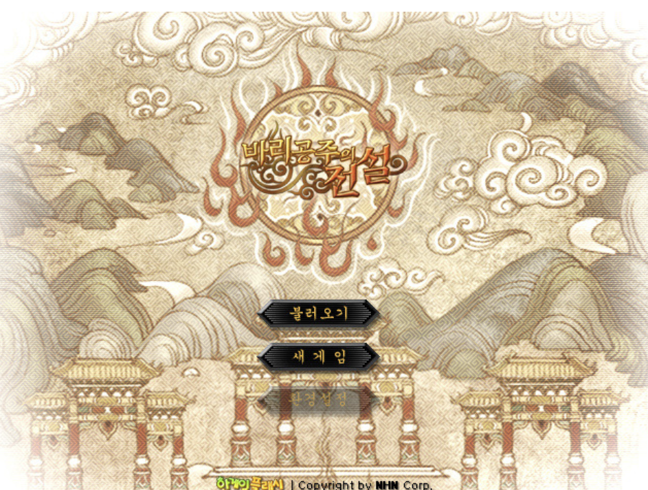
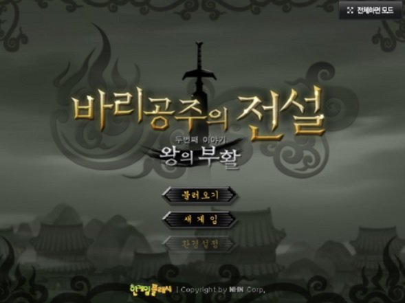
신화 '바리공주'를 모티프로 만든 게임. 과거 '한게임 플래시' 소속이었던 인기 게임으로, 캐릭터 성장식 RPG형 플래시게임이다. 몬스터를 잡아 경험치와 돈을 얻고, 경험치와 돈을 모아 캐릭터를 성장시켜 상급 전투 지역으로 진행해 나가는 전반적인 과정 속에서, 보스 잡는 것을 포함한 이런저런 퀘스트를 수행해나가는 게임이다. 1편-지옥의 생명수와 2편-왕의 부활로 나뉜다.
- 사망여각
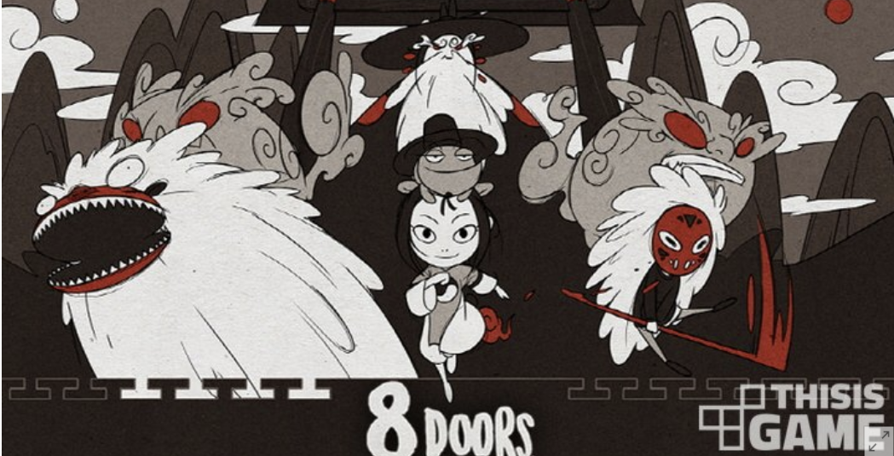
Rootless Studio가 제작한 인디 게임. '바리공주' 신화를 배경으로 한 게임으로 텀블벅 페이지의 설명에 따르면 사망여각은 '염라대왕에게 심판을 받기 전 저승사자와 하룻밤을 묵어가는 여각'이라고 한다. 주인공 아름이 아버지의 의문의 죽음에 대해 진상을 밝히기 위하여 바다에 뛰어들어 저승 세계로 가면서 게임이 시작한다.
<문학 콘텐츠>
- 황석영, 소설 <바리데기>
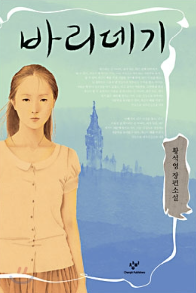
작가 황석영이 신화 '바리공주'를 차용해 창작한 현대 소설. 중국대륙과 대양을 건너 런던에 정착한 탈북소녀 '바리'의 여정을 통해 한반도와 전 세계에 닥쳐 있는 절망과 폭력, 전쟁과 테러를 폭로한다. 신화를 차용해 환상과 현실을 넘나들며 21세기 현실을 박진감있게 녹여냈다는 평을 받는다.
- 강은교, 시 <바리데기의 여행 노래>

강은교 시인은 초기 시집 '풀잎'에 신화 '바리공주'를 차용해 창작한'바리데기 여행(旅行)의 노래' 연작시 5편을 게재한다. 이후 이 모티브는 1996년 시집 '어느 별에서의 하루'에 '바리데기, 가장 일찍 버려진 자이며 가장 깊이 잊혀진 자의 노래'라는 부제가 달린 6편의 바리데기 주제의 시를 통해 부활한다. 죽은 혼령을 저승으로 보내는 제의이기도 한 '바리공주' 신화를 차용하여 가부장제의 억압에서 해방되고자 한 여성 주체들은 물론, 격동의 70~80년대를 지나 깊은 이념적 회의에 빠진 90년대 피폐한 존재성을 구원하고자 시도했다는 평을 받는다.
<공연 콘텐츠>
- 뮤지컬, <꽃피는 바리>
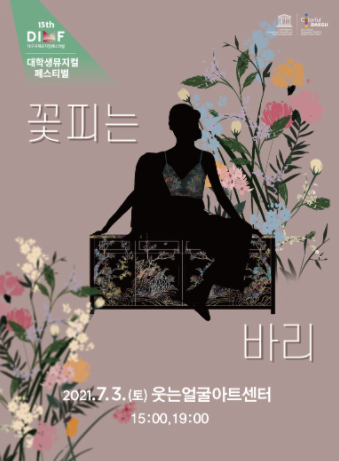
2021년 대학생뮤지컬페스티벌에서 상영된 작품이다. 신화 '바리공주'를 배경으로 한 뮤지컬로 바리공주가 생명수를 구하는 과정에 초점을 둔 모험극이다.
- 연극, <바리데기>
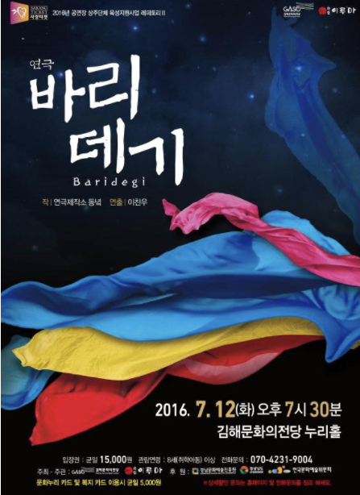
연극 '바리데기'는 신화 '바리공주'를 배경으로 하고 있으며 2016년 경남연극제에서 은상을 수상하였다.
콘텐츠 제안
<바리공주 윷놀이>
- 콘텐츠 제안 이유
바리공주 설화와 민속놀이인 윷놀이를 결합한 보드게임을 제안하고자 한다. 바리공주 설화는 서사무가로서의 가치가 높은 한편 전통적 효의식도 잘 다고 있어 아이들이 책으로 읽기에 적합하다고 판단했다. 이에 독서의 효용을 더욱 높여줄 보조교재로 보드게임을 고안했다.
다만 우리가 만든 보드게임은 책에 대한 이해를 심화하기보다는 새롭게 생각할 지점을 제시하는 데 방점이 있다. 이에 책이 바리공주 원전을 그대로 구현하는 방향이라면, 보드게임에서는 바리를 보다 주체적인 인물로 그렸다. 실제로 게임의 기본 설정은 바리가 자신의 삶을 지키기 위해 무조건적 희생을 강요하는 오구대왕으로부터 도망치는 구조다. 이로써 아이들이 독서와 놀이를 통해 전통적 효의식과 주체적 인식에 대해 스스로 생각해 볼 수 있기를 기대한다. 더불어 게임은 민속놀이인 윷놀이에 새로운 재미요소를 더하는 방향으로 마련했다. 각각의 지점, 즉 사대문 지점에서 수행해야 하는 민속퀴즈 역시 놀이를 통해 우리 문화를 보다 가깝게 접할 수 있도록 하기 위한 장치로, 보조교재로써의 성격을 갖는다.
- 프롤로그

- 게임방법
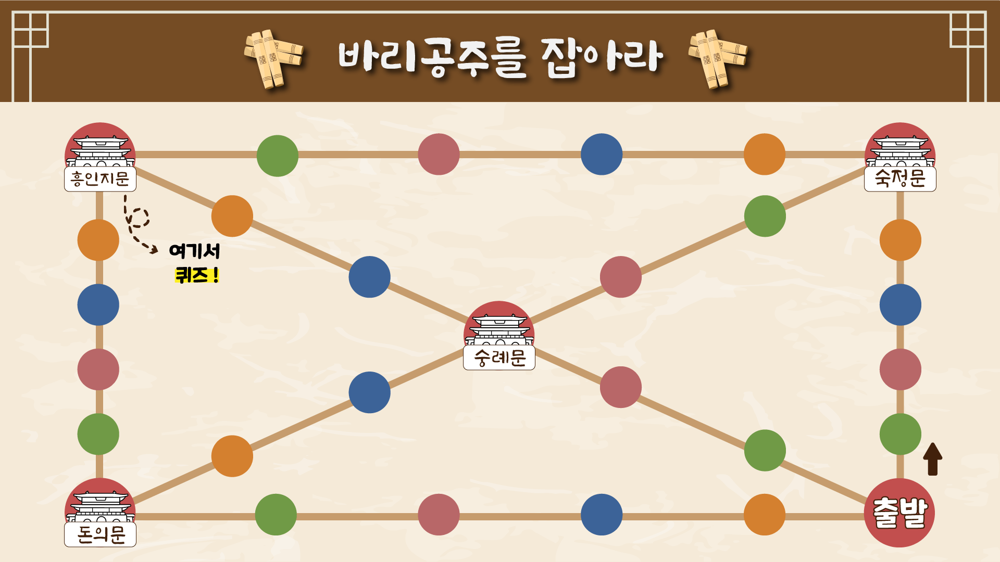
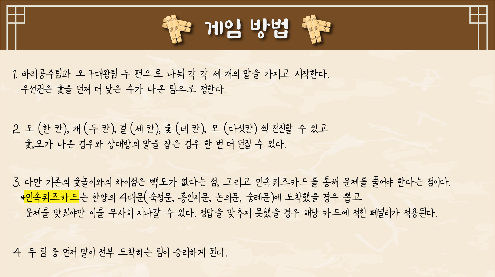
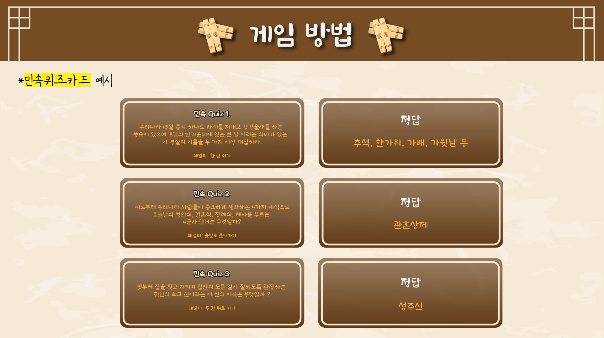
- 에필로그
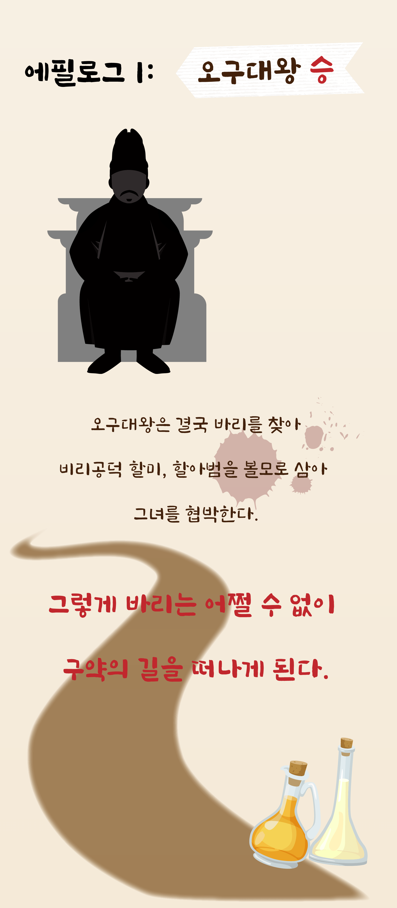
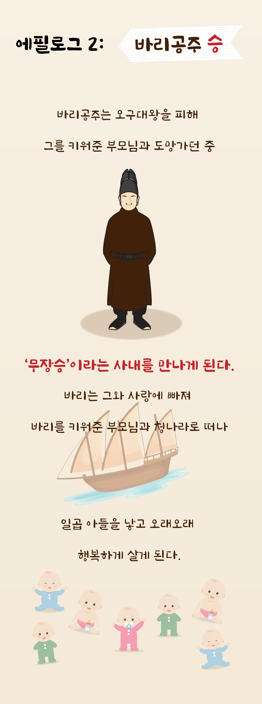